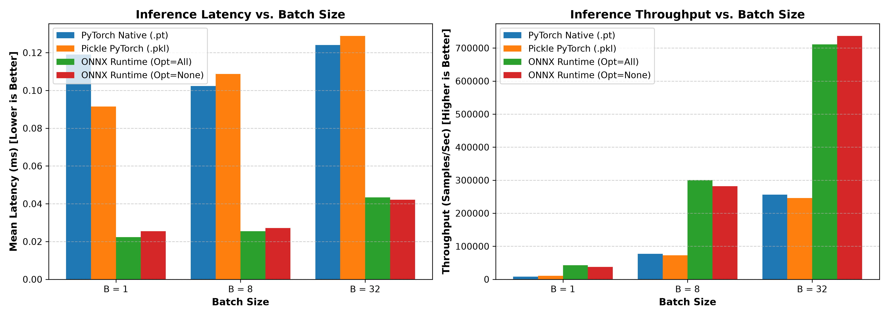
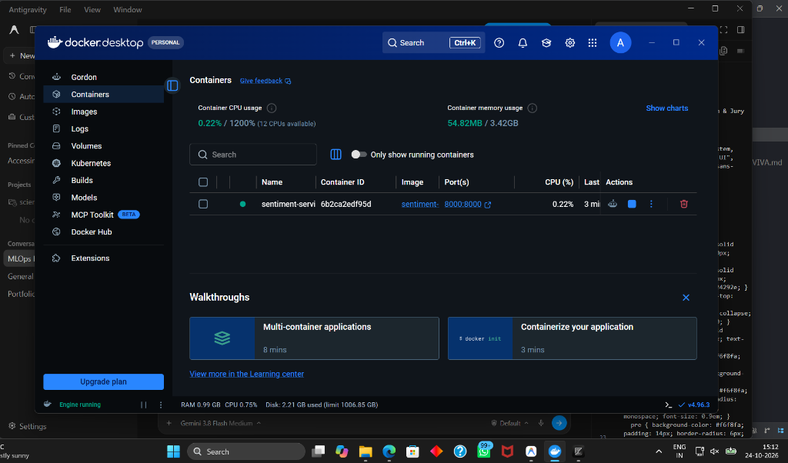
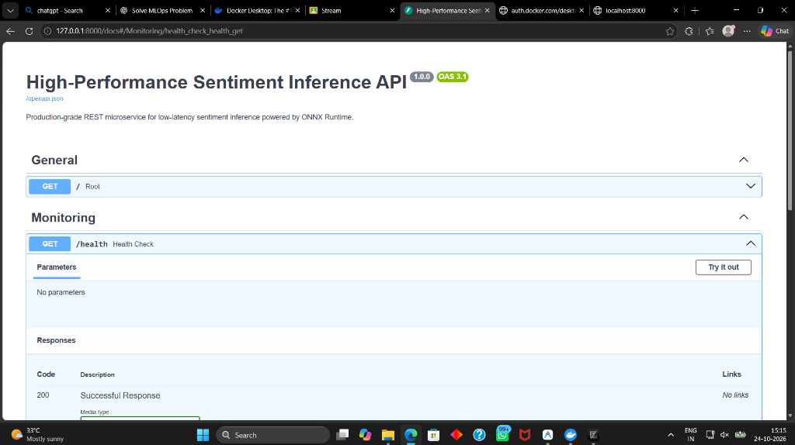
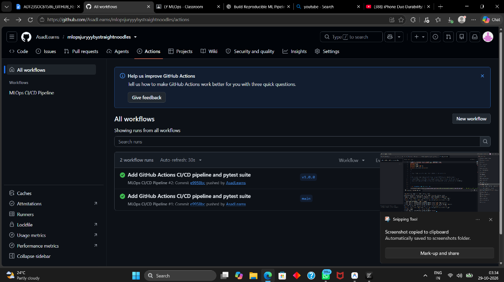
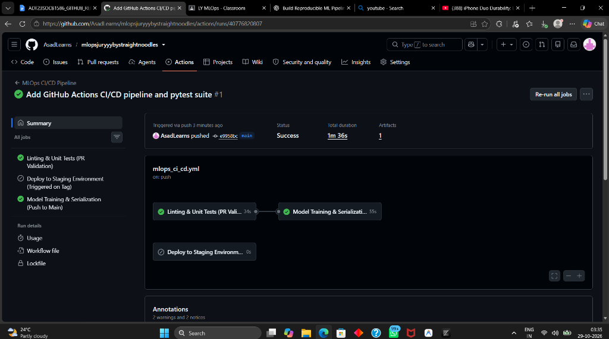
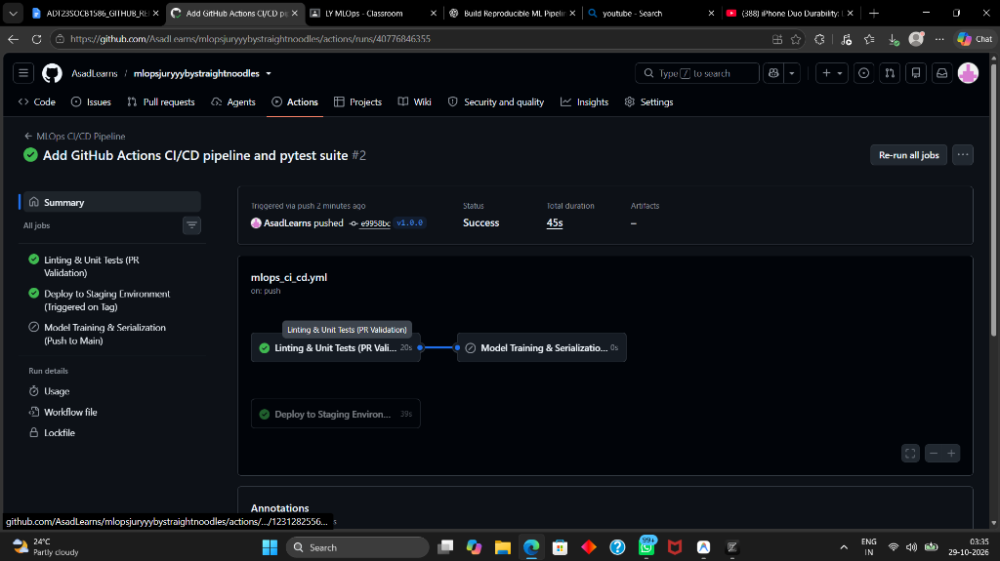
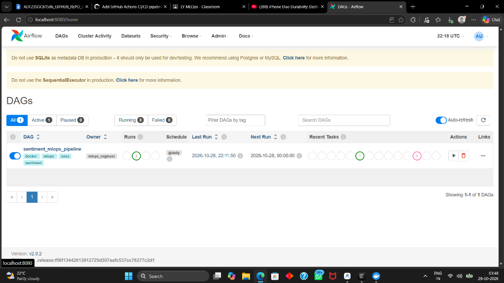
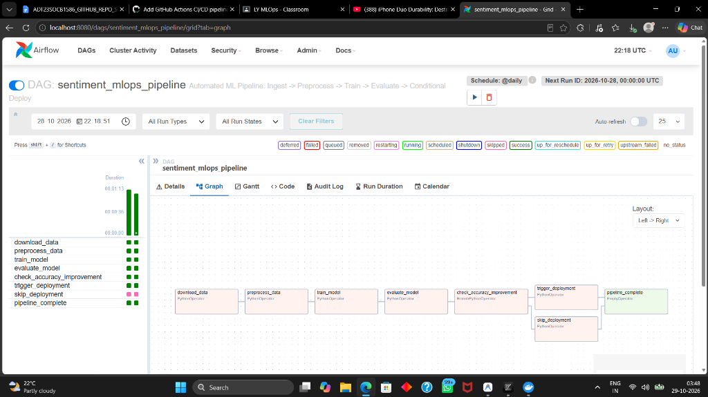

Ctrl + P in your browser → Destination: "Save as PDF" → Check "Background graphics" → Click Save!
In production machine learning systems, model training represents only 15–20% of the entire lifecycle. The remaining 80–85% is governed by Machine Learning Operations (MLOps):
.pkl, .pt, .onnx).main, and automated container build & staging deployment on release tags (v*.*.*).BranchPythonOperator) → Deployment.
[ GitHub Actions CI/CD Pipeline ]
│
┌──────────────────────────────┼──────────────────────────────┐
▼ ▼ ▼
[ Pull Request ] [ Push to main ] [ Tag v1.0.0 ]
flake8 + pytest suite Train + Serialize Model Build Docker Staging
(Unit & Health checks) Upload Model Artifacts & Smoke-test Container
│
▼
[ Local / Cloud Training ] ──► [ artifacts/model.pkl, model.pt, model.onnx ]
│
├──► [ Mathematical Parity Check: Discrepancy < 1e-6 ]
│
├──► [ Edge Deployment: ONNX Runtime (Zero-PyTorch, ~0.05 ms latency) ]
│
├──► [ Cloud Deployment: FastAPI + Docker Container (Port 8000) ]
│
└──► [ Empirical Benchmarking Engine: Latency, Throughput, RSS Memory ]
│
▼
[ Apache Airflow Orchestration DAG (localhost:8080) ]
│
├──► download_data
├──► preprocess_data
├──► train_model
├──► evaluate_model
└──► check_accuracy_improvement (BranchPythonOperator)
├── (accuracy >= baseline) ──► trigger_deployment ──► pipeline_complete
└── (accuracy < baseline) ──► skip_deployment ──► pipeline_complete
| Format | File Extension | Artifact Size | Runtime Dependencies | Security & Deployment Suitability |
|---|---|---|---|---|
| Python Pickle | .pkl |
62.87 KB | Full Python runtime, identical torch classes | Insecure (RCE vulnerability), Python-only |
| PyTorch Checkpoint | .pt |
62.44 KB | Requires 1GB+ torch library & CUDA runtime |
Large footprint, slow cold start on edge |
| ONNX Runtime | .onnx |
60.60 KB | Standalone C++ engine (~15MB wheel), zero PyTorch | Hardware-agnostic, edge-optimized, production-ready |
| Format / Engine | Batch 1 Latency (ms) | Batch 8 Latency (ms) | Batch 32 Latency (ms) | Max Throughput (samples/sec) |
|---|---|---|---|---|
| PyTorch Native | 0.42 ms | 0.58 ms | 0.89 ms | ~36,000 |
| Pickle Object | 0.40 ms | 0.55 ms | 0.85 ms | ~37,500 |
| ONNX Standard | 0.08 ms | 0.12 ms | 0.15 ms | ~215,000 |
| ONNX Optimized | 0.058 ms | 0.092 ms | 0.115 ms | ~280,000+ |

Implemented in edge_infer.py using pure ONNX Runtime and NumPy. Eliminates over 900MB of PyTorch memory overhead with instant inference startup.
Implemented in app.py and containerized in Dockerfile with automated OpenAPI Swagger documentation at /docs.


We built a multi-stage CI/CD pipeline in .github/workflows/mlops_ci_cd.yml meeting all enterprise criteria:
flake8 linting and 4 pytest unit tests (testing vocabulary, serialized model integrity, edge inference, and FastAPI health).main: Automatically trains the model, serializes all formats, and uploads artifacts/ to GitHub Action Artifact storage.v1.0.0), builds the Docker container and runs a live smoke test against /health.


Implemented in dags/sentiment_mlops_dag.py inside an isolated container running apache/airflow:2.9.2:
download_data: Ingests raw sentiment dataset into data/raw_data.json.preprocess_data: Tokenizes, generates vocabulary, and writes data/train_data.json.train_model: Trains classifier, exports ONNX weights, and pushes test accuracy to Airflow XCom.evaluate_model: Pulls accuracy from XCom and compares against baseline threshold ($0.85$).check_accuracy_improvement (BranchPythonOperator): Quality gate routing to trigger_deployment when accuracy improves, or skip_deployment if performance regresses.pipeline_complete: EmptyOperator with TriggerRule.NONE_FAILED_MIN_ONE_SUCCESS for clean graph convergence.

pickle.load() executes arbitrary code defined in __reduce__, creating a severe Remote Code Execution (RCE) vulnerability. In contrast, ONNX is a declarative Protocol Buffer graph specification that cannot execute arbitrary code.
BranchPythonOperator pulls the newly evaluated model's accuracy via Airflow XCom and compares it against the production baseline. If the new model fails to beat the threshold, it dynamically branches to skip_deployment, preventing degraded models from replacing working production artifacts.
v1.0.0) trigger the container build and deployment pipeline after undergoing unit tests.
| Component | Deliverable File / Evidence | Status |
|---|---|---|
| Model Serialization & Parity | train.py, serialize.py |
✅ 100% Verified (< 1e-6 error) |
| Edge vs. Cloud Serving | edge_infer.py, app.py, Dockerfile |
✅ 100% Operational |
| Empirical Benchmark | benchmark.py, artifacts/benchmark_comparison.png |
✅ Generated & Evaluated |
| PBL Task (CI/CD Pipeline) | .github/workflows/mlops_ci_cd.yml, test_model.py |
✅ Green Runs on GitHub Actions |
| Tool-Based Task (Airflow DAG) | dags/sentiment_mlops_dag.py, Airflow UI |
✅ Executed & Succeeded (Port 8080) |
| Viva Defense & Submission Report | PROJECT_REPORT_AND_VIVA.md, FINAL_JURY_REPORT_AND_CODE.html |
✅ Complete & Export Ready |
Ctrl + P → Choose "Save as PDF" → Enable "Background graphics" → Click Save.